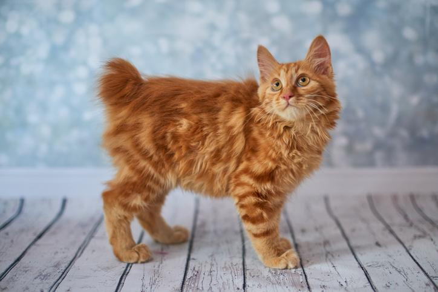

Proviene del continente americano. Estuvo presente en el continente desde que el bobtail japonés empezó a criarse, pero no fue hasta los años 60 del siglo pasado cuando se le comenzó a dar importancia. Procede de un cruce entre una hembra siamesa seal point y un macho atigrado de cola corta. Este macho lo adquirieron John y Brenda Sanders, procedentes de Iowa cuando estaban de vacaciones por Arizona, y se piensa que era un híbrido entre un gato doméstico y montés o bobtail. En la camada que tuvieron, todos los gatitos presentaban la cola corta y vieron la posibilidad de una nueva raza felina. Estos gatitos fueron cruzados con gatos birmanos e himalayas. Una amiga de los Sanders escribió el primer estándar a principio de los años 70 del siglo XX: gato de cola corta, pelo largo y cara y patas blancas. Sin embargo, en los años 80, los criadores tenían dificultades en relación a la consanguinidad, volviéndose la línea demasiado endogámica para utilizarse. Por este motivo, se terminó por aceptar un gato de todos los colores, que tenga aspecto de bobcat y de pelo largo o corto.
Es un gato de tamaño medio a grande, con un cuerpo atlético y musculoso. Lo que más llama la atención de su apariencia física es su corta cola, que varía entre un tercio y la mitad de la longitud de una cola de gato estándar, pudiendo ser recta, curva o ligeramente enredada. Siguiendo con las características del bobtail americano, el cuerpo es largo y rectangular y el tórax es amplio. Las patas traseras son algo más largas que las delanteras y los pies son redondos, grandes y en ocasiones con mechones en los dedos. La cabeza tiene forma de cuña, es amplia y no muy grande en relación al resto del cuerpo. Los ojos son grandes, de ovalados a almendrados, moderadamente separados y profundos, dándole una mirada salvaje. Las orejas son medianas, anchas en la base y con las puntas algo redondeadas.

El patrón puede ser atigrado (tabby), tortuga (carey), sólido (negro, azul, rojo), bicolor o tricolor (calicó). Están aceptados todos los colores en esta raza.

Se caracteriza por ser un felino enérgico, juguetón, cariñoso, inteligente y sociable. En cuanto ve una oportunidad, tiende a escaparse para explorar el exterior e intentar cazar alguna presa, ya que adora estar fuera de casa. Por este motivo, se le puede enseñar a ir con correa y dar paseos con él para saciar ese instinto.

Los cuidados del bobtail americano no suelen ser muy complicados, los bobtail de pelo largo sí necesitan un cepillado de mayor frecuencia que aquellos de pelo corto, siendo ideal varias veces por semana, para evitar acumulaciones de pelo causantes de los tricobezoares o bolas de pelo que pueden causar obstrucción intestinal. Los requerimientos de higiene del bobtail americano no distan mucho de los propios de otras razas. En este sentido, deberás atender a la limpieza de sus oídos y ojos empleando productos específicos para prevenir la aparición de infecciones. Como todos los gatos, las necesidades nutricionales se caracterizan por presentar un amplio porcentaje de proteína en el total de su dieta e importante también para mantener su buena musculatura. El alimento debe ser completo, que cubra todos los nutrientes esenciales en su correcta proporción para un buen desarrollo orgánico y funcional.

Es una raza con tendencia a sufrir displasia de cadera, enfermedad ortopédica que consiste en una mala conjunción entre la parte articular de la cadera (acetábulo) con la cabeza del fémur, lo que causa que está cabeza de este hueso se pueda desplazar y moverse, esto hace que la articulación se inflame y se debilite progresivamente, lo que la hace una enfermedad degenerativa que suele desembocar con el desarrollo de artrosis, molestias o dolor, cojeras y atrofia muscular de las extremidades posteriores. En los casos de bobtails americanos con cola de mínima longitud, pueden aparecer problemas derivados de una espina dorsal más corta, apareciendo afecciones a nivel de la columna vertebral, de vejiga o de intestino. A pesar de lo anterior, es una raza muy longeva, con una esperanza de vida de 20-21 años.